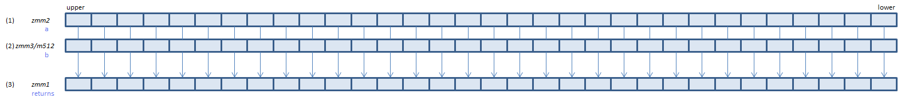

PMULHRSW - Packed MULtiply High Round Scale Word
PMULHRSW xmm1, xmm2/m128 (SS3
__m128i _mm_mulhrs_epi16(__m128i a, __m128i b)

Briefly: for each signed WORD, calculate (1) * (2) / 32768, and set the rounded result to (3).
VPMULHRSW xmm1, xmm2, xmm3/m128 (V1
__m128i _mm_mulhrs_epi16(__m128i a, __m128i b)
VPMULHRSW xmm1{k1}{z}, xmm2, xmm3/m128 (V5+BW+VL
__m128i _mm_mask_mulhrs_epi16(__m128i s, __mmask8 k, __m128i a, __m128i b)
__m128i _mm_maskz_mulhrs_epi16(__mmask8 k, __m128i a, __m128i b)

Briefly: for each signed WORD, calculate (1) * (2) / 32768, and set the rounded result to (3).
VPMULHRSW ymm1, ymm2, ymm3/m256 (V2
__m256i _mm256_mulhrs_epi16(__m256i a, __m256i b)
VPMULHRSW ymm1{k1}{z}, ymm2, ymm3/m256 (V5+BW+VL
__m256i _mm256_mask_mulhrs_epi16(__m256i s, __mmask16 k, __m256i a, __m256i b)
__m256i _mm256_maskz_mulhrs_epi16(__mmask16 k, __m256i a, __m256i b)

Briefly: for each signed WORD, calculate (1) * (2) / 32768, and set the rounded result to (3).
VPMULHRSW zmm1{k1}{z}, zmm2, zmm3/m512 (V5+BW
__m512i _mm512_mulhrs_epi16(__m512i a, __m512i b)
__m512i _mm512_mask_mulhrs_epi16(__m512i s, __mmask32 k, __m512i a, __m512i b)
__m512i _mm512_maskz_mulhrs_epi16(__mmask32 k, __m512i a, __m512i b)

Briefly: for each signed WORD, calculate (1) * (2) / 32768, and set the rounded result to (3).
The result is rounded to the nearer integer value. If the fraction is 0.5, rounded to the larger integer (if the result is negative, rounded toward zero).
Wraps only when both WORDs of (1) and (2) are -32768.
x86/x64 SIMD Instruction List
Feedback